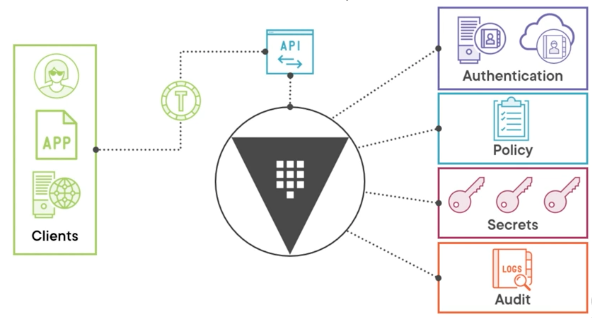
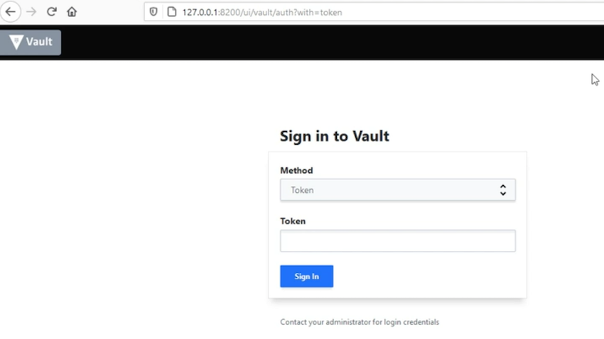

L1 Vault Associate: Introduction
Ovewview
- Compare authentication methods
- Create Vault policies
- Assess Vault tokens
- Manage Vault leases
- Compare and configure Vault secrets engines
- Utilize Vault CLI
- Utilize Vault UI
- Be aware of the Vault API
- Explain Vault architecture
- Explain encryption as a service
HashiCorp Vault
- Secrets lifecycle manager
- Written in Go
- Multiple operating systems
- Same binary for client/server
Vault Concepts

Authentication
It has one or more authentication methods. Those authentication methods could rely on an internal system like userpass or an external system like LDAP.
Policy
policies govern what you can do on the Vault system. Once you have successfully authenticated to Vault and received the proper policies,
Secrets
Those secrets are surfaced through secrets engines also called plugins.
Audit
Now one thing that's often overlooked in Vault is its audit system. Because you're interacting with secrets, which are extremely important and sensitive, want to audit everything that's going on with your Vault system
Who is accessing Vault
- A direct end user who's interacting with Vault.
- Application that has some Vault code written into it to interact with the API.
- Virtual machine or a physical machine that's running some process to talk to Vault.
They all end up interacting with the same thing, which is the API that sits in front of Vault. And it is the one and only way to interact with all the things on the back end of Vault.
To interact with authentication,policy, secrets, all of those things, you have to go through the API.
All of that interaction is going to involve a token that is granted by Vault to you. And you use that token with each of your requests that you send to Vault.
Interacting with Vault
Install Binary Vault
https://developer.hashicorp.com/vault/tutorials/getting-started/getting-started-install
# Windows - use Chocolatey
choco install vault
# Mac - use Homebrew
brew tap hashicorp/tap
brew install hashicorp/tap/vault
$ brew upgrade hashicorp/tap/vault
Warning: hashicorp/tap/vault 1.12.1 already installed
# Linux - use your package manager
curl -fsSL https://apt.releases.hashicorp.com/gpg | sudo apt-key add -
sudo apt-add-repository "deb [arch=amd64] https://apt.releases.hashicorp.com $(lsb_release -cs) main"
sudo apt-get update && sudo apt-get install vault
$ cat /etc/redhat-release
CentOS Linux release 7.9.2009 (Core)
$ sudo yum install -y yum-utils
$ sudo yum-config-manager --add-repo https://rpm.releases.hashicorp.com/RHEL/hashicorp.repo
$ sudo yum -y install vault
$ vault version
Vault v1.12.1 (e34f8a14fb7a88af4640b09f3ddbb5646b946d9c), built 2022-10-27T12:32:05Z
Vault CLI
# Basic vault command structure
vault <command> <subcommand> [options] [ARGUMENTS]
# Getting help with vault
vault «command> -help
vault path-help PATH
Development mode
- Running on localhost without SSL
- In-memory storage
- Starts unsealed
- UI enabled
- Key/Value secrets engine enabled
Starting the Dev Server
Usage: vault server [options]
This command starts a Vault server that responds to API requests. By default,
Vault will start in a "sealed" state. The Vault cluster must be initialized
before use, usually by the "vault operator init" command. Each Vault server must
also be unsealed using the "vault operator unseal" command or the API before the
server can respond to requests.
Start a server with a configuration file:
$ vault server -config=/etc/vault/config.hcl
Run in "dev" mode:
$ vault server -dev -dev-root-token-id="root"
For a full list of examples, please see the documentation.
...
# Launch Vault in development mode
vault server -dev
vault server -dev
==> Vault server configuration:
Api Address: http://127.0.0.1:8200
Cgo: disabled
Cluster Address: https://127.0.0.1:8201
Go Version: go1.19.2
Listener 1: tcp (addr: "127.0.0.1:8200", cluster address: "127.0.0.1:8201", max_request_duration: "1m30s", max_request_size: "33554432", tls: "disabled")
Log Level: info
Mlock: supported: true, enabled: false
Recovery Mode: false
Storage: inmem
Version: Vault v1.12.1, built 2022-10-27T12:32:05Z
Version Sha: e34f8a14fb7a88af4640b09f3ddbb5646b946d9c
==> Vault server started! Log data will stream in below:
...
WARNING! dev mode is enabled! In this mode, Vault runs entirely in-memory
and starts unsealed with a single unseal key. The root token is already
authenticated to the CLI, so you can immediately begin using Vault.
You may need to set the following environment variables:
$ export VAULT_ADDR='http://127.0.0.1:8200'
The unseal key and root token are displayed below in case you want to
seal/unseal the Vault or re-authenticate.
Unseal Key: iHzoi88Bvod09TEfvI+lNYnXEnxb3Ph22oOHMpXKGYg=
Root Token: hvs.v9xurOdtve57iuHBFUbs2f3w
Development mode should NOT be used in production installations!
Unseal Key: iHzoi88Bvod09TEfvI+lNYnXEnxb3Ph22oOHMpXKGYg=
Root Token: hvs.v9xurOdtve57iuHBFUbs2f3w
export root_token=hvs.v9xurOdtve57iuHBFUbs2f3w
vault login -address="http://127.0.0.1:8200" $root_token
vault login -address="http://127.0.0.1:8200" $root_token
Success! You are now authenticated. The token information displayed below
is already stored in the token helper. You do NOT need to run "vault login"
again. Future Vault requests will automatically use this token.
Key Value
--- -----
token hvs.v9xurOdtve57iuHBFUbs2f3w
token_accessor DwTOLrYyE2YDIT9Xw10NB7CJ
token_duration ∞
token_renewable false
token_policies ["root"]
identity_policies []
policies ["root"]
# Store Vault server address in environment variable
#Linux and macOS
export VAULT_ADDR=http://127.0.0.1:8200
# Windows PowerShell
Senv:VAULT_ADDR="htto://127.0.0.1:8200'
# Log into Vault
export VAULT_ADDR='http://127.0.0.1:8200'
$ curl http://localhost:8200
<a href="/ui/">Temporary Redirect</a>.
Environment Variables
VAULT_ADDR- Address of the Vault serverVAULT_TOKEN- Token value for requestsVAULT_SKIP_VERIFY- No verify TLS certVAULT_FORMAT- Specify output format
$ vault status
Key Value
--- -----
Seal Type shamir
Initialized true
Sealed false
Total Shares 1
Threshold 1
Version 1.12.1
Build Date 2022-10-27T12:32:05Z
Storage Type inmem
Cluster Name vault-cluster-9f4e0e41
Cluster ID 9a900a0e-9a53-2793-c1c9-8d9c9aed2b16
HA Enabled false
http://127.0.0.1:8201/ui

Vault API
- RESTful
- Used by Ul and CLI
- Only way to interact with Vault
- curl with X-Vault-Token header
we are asking for host-info about the host running our Vault, server, so this is going to be a GET type request.
export VAULT_ADDR='http://127.0.0.1:8200'
export root_token=hvs.VtsTEZn9wbP34P63WybIZMhv
curl --header "X-Vault-Token: $root_token" --request GET $VAULT_ADDR/v1/sys/host-info | jq
% Total % Received % Xferd Average Speed Time Time Time Current
Dload Upload Total Spent Left Speed
100 3515 0 3515 0 0 74470 0 --:--:-- --:--:-- --:--:-- 92500
{
"request_id": "809df17b-5d94-e068-3078-cd400a328788",
"lease_id": "",
"renewable": false,
"lease_duration": 0,
"data": {
"cpu": [
{
"cpu": 0,
"vendorId": "GenuineIntel",
"family": "6",
"model": "70",
"stepping": 1,
"physicalId": "",
"coreId": "",
"cores": 4,
"modelName": "Intel(R) Core(TM) i7-4980HQ CPU @ 2.80GHz",
"mhz": 2800,
"cacheSize": 256,
"flags": [
"fpu",
"vme",
"de",
"pse",
...
},
"timestamp": "2022-11-04T06:34:38.380146Z"
},
"wrap_info": null,
"warnings": [
"cpu_times: not implemented yet"
],
"auth": null
}
Key Takeaways
- Vault is a single binary for client and server
- Vault can be started in dev mode for local testing
- All Vault communication goes through the API
- You can interact with Vault using the CLI, UI, or API
- Use
VAULT_ADDRandVAULT_TOKENwith the CLI